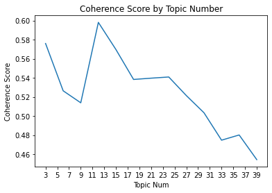

Estimates from Factor Model
Contents
import numpy as np
import pandas as pd
import matplotlib.pyplot as plt
import re
import json
import string
import nltk
from nltk.corpus import wordnet
from nltk.stem import WordNetLemmatizer
from nltk.tokenize import word_tokenize
from nltk.corpus import stopwords
Estimates from Factor Model¶
r_selected = pd.read_csv("filtered_r.csv")
# get the mean of all
r_selected.set_index("name", inplace = True)
mu = r_selected.mean(axis = 1)
# compute the covariance matrix
cov = r_selected.T.cov()
df = pd.read_csv('../data/preprocessed.csv',
usecols = ['reportingDate', 'name', 'CIK', 'coDescription',
'coDescription_stopwords', 'SIC', 'SIC_desc'])
df = df.set_index(df.name)
Sent-LDA¶
We ran the coherence score benchmarking over a range of 3 to 40 topics, incrementing by 3. First, we fit the LDA model to all business description using the number of topics selected from coherence score benchmarking. Then, we assume each sentence only represents one topic; get the frequency of the topics revealed in the whole document (business description for one company) and calculate the probability of each topics in the whole document.
data = df.loc[:,"coDescription_stopwords"].to_list()
len(data)
675

Based on the above Coherence Score, we choose up to 12 topics since it gives the highest score up to here.
from sklearn.feature_extraction.text import CountVectorizer
from sklearn.decomposition import LatentDirichletAllocation
# LDA can only use raw term counts for LDA because it is a probabilistic graphical model
tf_vectorizer = CountVectorizer(max_df=0.85, min_df=2, max_features=600)
tf = tf_vectorizer.fit_transform(data)
tf_feature_names = tf_vectorizer.get_feature_names_out()
lda = LatentDirichletAllocation(n_components=12, random_state=0).fit(tf)
We show the top 10 words by weights in the 12 topics LDA model generates in the below table.
get_topics(lda, tf_vectorizer, 12)
| Topic # 01 | Topic # 02 | Topic # 03 | Topic # 04 | Topic # 05 | Topic # 06 | Topic # 07 | Topic # 08 | Topic # 09 | Topic # 10 | Topic # 11 | Topic # 12 | |
|---|---|---|---|---|---|---|---|---|---|---|---|---|
| 0 | could | loan | share | product | investment | gas | hotel | patient | bank | customer | million | cell |
| 1 | gas | mortgage | stock | drug | income | oil | facility | treatment | capital | service | tax | cancer |
| 2 | regulation | real | note | fda | asset | natural | tenant | trial | institution | data | asset | tumor |
| 3 | oil | estate | issued | clinical | reit | production | lease | study | federal | product | net | product |
| 4 | future | commercial | preferred | patent | real | reserve | operating | phase | act | solution | income | therapy |
| 5 | natural | bank | date | approval | tax | proved | estate | clinical | banking | software | cash | therapeutic |
| 6 | price | interest | amount | trial | share | drilling | million | disease | holding | platform | expense | clinical |
| 7 | affect | rate | september | application | interest | regulation | real | drug | regulation | technology | value | technology |
| 8 | ability | million | per | regulatory | distribution | net | center | therapy | deposit | application | note | research |
| 9 | adversely | security | director | candidate | estate | water | portfolio | data | asset | sale | statement | license |
Assign Frequency of the topic to each sentence¶
n_components = 12
prob = pd.DataFrame(0, index = df.name, columns = range(n_components))
for j in range(len(df)):
LIST_sent = pd.Series(df.coDescription[j].split('.')).apply(std_func.lemmatize_sentence).apply(std_func.remove_nums).apply(std_func.remove_stopwords)
X = tf_vectorizer.transform(LIST_sent.tolist())
sent = lda.transform(X)
sent_df = pd.DataFrame(sent)
# drop the values that are smaller than 1/12
# if the maximum value is 1/12, the probability of each topic in that sentence is the same
# we cannot determine which topic to choose
sent_df = sent_df[sent_df.max(axis = 1) > 1/12].reset_index(drop = True)
for i in range(n_components):
prob.iloc[j][i] = list(sent_df.idxmax(axis = 1)).count(i)
# calculate the probability
prob = prob.div(prob.sum(axis=1), axis=0)
prob
| 0 | 1 | 2 | 3 | 4 | 5 | 6 | 7 | 8 | 9 | 10 | 11 | |
|---|---|---|---|---|---|---|---|---|---|---|---|---|
| name | ||||||||||||
| MONGODB, INC. | 0.014652 | 0.007326 | 0.021978 | 0.036630 | 0.018315 | 0.010989 | 0.040293 | 0.021978 | 0.014652 | 0.739927 | 0.047619 | 0.025641 |
| SALESFORCE COM INC | 0.010811 | 0.010811 | 0.005405 | 0.016216 | 0.000000 | 0.021622 | 0.037838 | 0.005405 | 0.005405 | 0.821622 | 0.054054 | 0.010811 |
| SPLUNK INC | 0.010274 | 0.003425 | 0.013699 | 0.020548 | 0.013699 | 0.003425 | 0.023973 | 0.000000 | 0.003425 | 0.839041 | 0.058219 | 0.010274 |
| OKTA, INC. | 0.020305 | 0.000000 | 0.015228 | 0.050761 | 0.015228 | 0.005076 | 0.040609 | 0.000000 | 0.015228 | 0.786802 | 0.030457 | 0.020305 |
| VEEVA SYSTEMS INC | 0.093245 | 0.012845 | 0.094196 | 0.028544 | 0.035205 | 0.008563 | 0.019981 | 0.010466 | 0.017602 | 0.315414 | 0.352046 | 0.011893 |
| ... | ... | ... | ... | ... | ... | ... | ... | ... | ... | ... | ... | ... |
| AMERICAN REALTY CAPITAL NEW YORK CITY REIT, INC. | 0.075472 | 0.084906 | 0.122642 | 0.009434 | 0.471698 | 0.009434 | 0.075472 | 0.000000 | 0.000000 | 0.066038 | 0.084906 | 0.000000 |
| CYCLACEL PHARMACEUTICALS, INC. | 0.027460 | 0.000000 | 0.029748 | 0.272311 | 0.011442 | 0.009153 | 0.018307 | 0.308924 | 0.000000 | 0.029748 | 0.013730 | 0.279176 |
| ZOETIS INC. | 0.036519 | 0.018868 | 0.074254 | 0.033475 | 0.034084 | 0.013999 | 0.035301 | 0.018868 | 0.020694 | 0.053561 | 0.644553 | 0.015825 |
| STAG INDUSTRIAL, INC. | 0.181818 | 0.016529 | 0.066116 | 0.016529 | 0.132231 | 0.016529 | 0.396694 | 0.008264 | 0.033058 | 0.074380 | 0.057851 | 0.000000 |
| EQUINIX INC | 0.024768 | 0.003096 | 0.030960 | 0.006192 | 0.015480 | 0.012384 | 0.061920 | 0.009288 | 0.009288 | 0.801858 | 0.018576 | 0.006192 |
675 rows × 12 columns
# get the names of the companies in the pharmaceutical preparations industry
Pharm = df[df.SIC == 2834]
Pharm_list = Pharm.index
# get the companies name that match return data and business description data
SET = (set(Pharm_list) & set(r_selected.index))
LIST = [*SET, ]
B_matrix = prob.T[LIST].T.drop_duplicates()
B_matrix
| 0 | 1 | 2 | 3 | 4 | 5 | 6 | 7 | 8 | 9 | 10 | 11 | |
|---|---|---|---|---|---|---|---|---|---|---|---|---|
| name | ||||||||||||
| IMPRIMIS PHARMACEUTICALS, INC. | 0.000000 | 0.000000 | 0.106509 | 0.349112 | 0.011834 | 0.017751 | 0.029586 | 0.142012 | 0.017751 | 0.106509 | 0.088757 | 0.130178 |
| VERASTEM, INC. | 0.011905 | 0.005952 | 0.023810 | 0.059524 | 0.011905 | 0.000000 | 0.000000 | 0.571429 | 0.017857 | 0.011905 | 0.011905 | 0.273810 |
| JOHNSON & JOHNSON | 0.067308 | 0.019231 | 0.009615 | 0.394231 | 0.038462 | 0.028846 | 0.086538 | 0.028846 | 0.048077 | 0.163462 | 0.038462 | 0.076923 |
| GLOBAL BLOOD THERAPEUTICS, INC. | 0.057971 | 0.014493 | 0.043478 | 0.072464 | 0.000000 | 0.000000 | 0.014493 | 0.724638 | 0.000000 | 0.014493 | 0.000000 | 0.057971 |
| ZOSANO PHARMA CORP | 0.000000 | 0.035398 | 0.026549 | 0.053097 | 0.000000 | 0.000000 | 0.017699 | 0.646018 | 0.008850 | 0.053097 | 0.035398 | 0.123894 |
| ... | ... | ... | ... | ... | ... | ... | ... | ... | ... | ... | ... | ... |
| IONIS PHARMACEUTICALS INC | 0.037885 | 0.006167 | 0.049339 | 0.112775 | 0.007048 | 0.012335 | 0.026432 | 0.421145 | 0.007048 | 0.045815 | 0.044053 | 0.229956 |
| FIBROGEN INC | 0.000000 | 0.000000 | 0.018519 | 0.129630 | 0.018519 | 0.037037 | 0.000000 | 0.666667 | 0.000000 | 0.000000 | 0.018519 | 0.111111 |
| ASSEMBLY BIOSCIENCES, INC. | 0.012658 | 0.000000 | 0.050633 | 0.012658 | 0.000000 | 0.012658 | 0.000000 | 0.594937 | 0.012658 | 0.025316 | 0.075949 | 0.202532 |
| TREVENA INC | 0.043478 | 0.000000 | 0.014493 | 0.086957 | 0.014493 | 0.000000 | 0.000000 | 0.739130 | 0.000000 | 0.028986 | 0.014493 | 0.057971 |
| SYNTHETIC BIOLOGICS, INC. | 0.040000 | 0.000000 | 0.022857 | 0.062857 | 0.005714 | 0.017143 | 0.022857 | 0.708571 | 0.005714 | 0.022857 | 0.017143 | 0.074286 |
124 rows × 12 columns
r_Pharm = r_selected.T[LIST].T
r_Pharm
| 2016-06-30 | 2016-07-31 | 2016-08-31 | 2016-09-30 | 2016-10-31 | 2016-11-30 | 2016-12-31 | 2017-01-31 | 2017-02-28 | 2017-03-31 | ... | 2018-03-31 | 2018-04-30 | 2018-05-31 | 2018-06-30 | 2018-07-31 | 2018-08-31 | 2018-09-30 | 2018-10-31 | 2018-11-30 | 2018-12-31 | |
|---|---|---|---|---|---|---|---|---|---|---|---|---|---|---|---|---|---|---|---|---|---|
| name | |||||||||||||||||||||
| IMPRIMIS PHARMACEUTICALS, INC. | -0.035897 | 0.029255 | 0.077519 | -0.086331 | -0.295276 | 0.013035 | -0.080882 | -0.104000 | 0.089286 | 0.709016 | ... | -0.032967 | 0.295455 | -0.021930 | -0.013453 | 0.068182 | 0.293617 | -0.085526 | 0.535971 | 0.107728 | 0.202960 |
| VERASTEM, INC. | -0.127517 | 0.076923 | -0.035714 | -0.014815 | -0.060150 | -0.088000 | -0.017544 | 0.133929 | -0.102362 | 0.815789 | ... | -0.026144 | 0.399329 | 0.340528 | 0.230769 | 0.119186 | 0.293506 | -0.272088 | -0.300690 | 0.005917 | -0.341176 |
| JOHNSON & JOHNSON | 0.076404 | 0.032399 | -0.040645 | -0.010139 | -0.018116 | -0.033537 | 0.035130 | -0.017012 | 0.086181 | 0.019147 | ... | -0.013320 | -0.012954 | -0.047197 | 0.014379 | 0.092138 | 0.023166 | 0.025837 | 0.013172 | 0.055790 | -0.121511 |
| GLOBAL BLOOD THERAPEUTICS, INC. | -0.306438 | 0.077758 | -0.049776 | 0.356680 | -0.242950 | 0.097421 | -0.245431 | 0.117647 | 0.724458 | 0.323160 | ... | -0.176471 | -0.085921 | 0.090600 | -0.061267 | -0.075221 | 0.171053 | -0.223698 | -0.076579 | -0.101168 | 0.301522 |
| ZOSANO PHARMA CORP | -0.294444 | 0.377953 | -0.542800 | -0.012748 | -0.253070 | 0.372881 | -0.037037 | 0.538462 | 1.233333 | -0.291045 | ... | -0.192308 | -0.150794 | -0.028037 | -0.019231 | 0.024510 | -0.002392 | -0.019185 | -0.171149 | 0.103245 | -0.433155 |
| ... | ... | ... | ... | ... | ... | ... | ... | ... | ... | ... | ... | ... | ... | ... | ... | ... | ... | ... | ... | ... | ... |
| IONIS PHARMACEUTICALS INC | 0.026443 | 0.253328 | 0.015759 | 0.235750 | -0.290939 | 0.684373 | 0.093007 | -0.069622 | 0.118427 | -0.192285 | ... | -0.165468 | -0.023820 | 0.084127 | -0.106752 | 0.048236 | 0.046016 | 0.128912 | -0.039356 | 0.176387 | -0.072568 |
| FIBROGEN INC | -0.120579 | 0.165753 | -0.095139 | 0.195841 | -0.200483 | 0.338369 | -0.033860 | 0.058411 | 0.103753 | -0.014000 | ... | -0.161525 | -0.016234 | 0.185919 | 0.161410 | 0.007987 | -0.030903 | -0.006541 | -0.294321 | 0.011430 | 0.067343 |
| ASSEMBLY BIOSCIENCES, INC. | -0.028021 | 0.007207 | 0.093023 | 0.180033 | 0.958391 | -0.089943 | -0.054475 | 0.528395 | 0.123317 | 0.221956 | ... | -0.133944 | -0.115181 | -0.027369 | -0.072830 | 0.128029 | -0.095636 | -0.071500 | -0.383953 | 0.126748 | -0.122576 |
| TREVENA INC | -0.139344 | -0.004762 | 0.081340 | -0.004425 | -0.277037 | 0.122951 | 0.072993 | 0.187075 | -0.418338 | -0.096059 | ... | -0.083799 | 0.134146 | 0.005376 | -0.229947 | 0.069444 | 0.168831 | 0.177778 | -0.568868 | -0.305252 | -0.322835 |
| SYNTHETIC BIOLOGICS, INC. | -0.178082 | -0.027778 | -0.062857 | 0.048780 | -0.186047 | -0.430857 | -0.042922 | 0.111985 | -0.068396 | -0.201646 | ... | -0.115556 | -0.246231 | 0.062500 | -0.062745 | -0.246862 | -0.544444 | -0.094077 | -0.676962 | -0.095011 | -0.263255 |
124 rows × 31 columns
from sklearn.linear_model import LinearRegression
LR = LinearRegression()
for i in range(len(r_Pharm.columns)):
date = r_Pharm.columns[i]
r_t_i = r_Pharm[date]
reg = LinearRegression().fit(B_matrix, r_t_i)
#print(reg.score(B_matrix, r_t_i))
print(reg.coef_)
[-1.98150339e+13 -1.98150339e+13 -1.98150339e+13 -1.98150339e+13
-1.98150339e+13 -1.98150339e+13 -1.98150339e+13 -1.98150339e+13
-1.98150339e+13 -1.98150339e+13 -1.98150339e+13 -1.98150339e+13]
[-3.36909398e+12 -3.36909398e+12 -3.36909398e+12 -3.36909398e+12
-3.36909398e+12 -3.36909398e+12 -3.36909398e+12 -3.36909398e+12
-3.36909398e+12 -3.36909398e+12 -3.36909398e+12 -3.36909398e+12]
[7.51391586e+12 7.51391586e+12 7.51391586e+12 7.51391586e+12
7.51391586e+12 7.51391586e+12 7.51391586e+12 7.51391586e+12
7.51391586e+12 7.51391586e+12 7.51391586e+12 7.51391586e+12]
[-1.82068113e+12 -1.82068113e+12 -1.82068113e+12 -1.82068113e+12
-1.82068113e+12 -1.82068113e+12 -1.82068113e+12 -1.82068113e+12
-1.82068113e+12 -1.82068113e+12 -1.82068113e+12 -1.82068113e+12]
[5.64341562e+12 5.64341562e+12 5.64341562e+12 5.64341562e+12
5.64341562e+12 5.64341562e+12 5.64341562e+12 5.64341562e+12
5.64341562e+12 5.64341562e+12 5.64341562e+12 5.64341562e+12]
[2.50109464e+13 2.50109464e+13 2.50109464e+13 2.50109464e+13
2.50109464e+13 2.50109464e+13 2.50109464e+13 2.50109464e+13
2.50109464e+13 2.50109464e+13 2.50109464e+13 2.50109464e+13]
[-1.87687509e+13 -1.87687509e+13 -1.87687509e+13 -1.87687509e+13
-1.87687509e+13 -1.87687509e+13 -1.87687509e+13 -1.87687509e+13
-1.87687509e+13 -1.87687509e+13 -1.87687509e+13 -1.87687509e+13]
[-1.82268389e+12 -1.82268389e+12 -1.82268389e+12 -1.82268389e+12
-1.82268389e+12 -1.82268389e+12 -1.82268389e+12 -1.82268389e+12
-1.82268389e+12 -1.82268389e+12 -1.82268389e+12 -1.82268389e+12]
[-6.58146006e+12 -6.58146006e+12 -6.58146006e+12 -6.58146006e+12
-6.58146006e+12 -6.58146006e+12 -6.58146006e+12 -6.58146006e+12
-6.58146006e+12 -6.58146006e+12 -6.58146006e+12 -6.58146006e+12]
[6.28062776e+13 6.28062776e+13 6.28062776e+13 6.28062776e+13
6.28062776e+13 6.28062776e+13 6.28062776e+13 6.28062776e+13
6.28062776e+13 6.28062776e+13 6.28062776e+13 6.28062776e+13]
[-7.37870029e+12 -7.37870029e+12 -7.37870029e+12 -7.37870029e+12
-7.37870029e+12 -7.37870029e+12 -7.37870029e+12 -7.37870029e+12
-7.37870029e+12 -7.37870029e+12 -7.37870029e+12 -7.37870029e+12]
[1.08692854e+13 1.08692854e+13 1.08692854e+13 1.08692854e+13
1.08692854e+13 1.08692854e+13 1.08692854e+13 1.08692854e+13
1.08692854e+13 1.08692854e+13 1.08692854e+13 1.08692854e+13]
[-1.21508801e+13 -1.21508801e+13 -1.21508801e+13 -1.21508801e+13
-1.21508801e+13 -1.21508801e+13 -1.21508801e+13 -1.21508801e+13
-1.21508801e+13 -1.21508801e+13 -1.21508801e+13 -1.21508801e+13]
[3.67565605e+12 3.67565605e+12 3.67565605e+12 3.67565605e+12
3.67565605e+12 3.67565605e+12 3.67565605e+12 3.67565605e+12
3.67565605e+12 3.67565605e+12 3.67565605e+12 3.67565605e+12]
[3.47025003e+12 3.47025003e+12 3.47025003e+12 3.47025003e+12
3.47025003e+12 3.47025003e+12 3.47025003e+12 3.47025003e+12
3.47025003e+12 3.47025003e+12 3.47025003e+12 3.47025003e+12]
[-4.51402425e+13 -4.51402425e+13 -4.51402425e+13 -4.51402425e+13
-4.51402425e+13 -4.51402425e+13 -4.51402425e+13 -4.51402425e+13
-4.51402425e+13 -4.51402425e+13 -4.51402425e+13 -4.51402425e+13]
[1.22264201e+13 1.22264201e+13 1.22264201e+13 1.22264201e+13
1.22264201e+13 1.22264201e+13 1.22264201e+13 1.22264201e+13
1.22264201e+13 1.22264201e+13 1.22264201e+13 1.22264201e+13]
[-1.56464831e+13 -1.56464831e+13 -1.56464831e+13 -1.56464831e+13
-1.56464831e+13 -1.56464831e+13 -1.56464831e+13 -1.56464831e+13
-1.56464831e+13 -1.56464831e+13 -1.56464831e+13 -1.56464831e+13]
[-2.91587383e+12 -2.91587383e+12 -2.91587383e+12 -2.91587383e+12
-2.91587383e+12 -2.91587383e+12 -2.91587383e+12 -2.91587383e+12
-2.91587383e+12 -2.91587383e+12 -2.91587383e+12 -2.91587383e+12]
[4.20994066e+13 4.20994066e+13 4.20994066e+13 4.20994066e+13
4.20994066e+13 4.20994066e+13 4.20994066e+13 4.20994066e+13
4.20994066e+13 4.20994066e+13 4.20994066e+13 4.20994066e+13]
[-6.67197201e+12 -6.67197201e+12 -6.67197201e+12 -6.67197201e+12
-6.67197201e+12 -6.67197201e+12 -6.67197201e+12 -6.67197201e+12
-6.67197201e+12 -6.67197201e+12 -6.67197201e+12 -6.67197201e+12]
[-6.23638709e+12 -6.23638709e+12 -6.23638709e+12 -6.23638709e+12
-6.23638709e+12 -6.23638709e+12 -6.23638709e+12 -6.23638709e+12
-6.23638709e+12 -6.23638709e+12 -6.23638709e+12 -6.23638709e+12]
[1.39714062e+13 1.39714062e+13 1.39714062e+13 1.39714062e+13
1.39714062e+13 1.39714062e+13 1.39714062e+13 1.39714062e+13
1.39714062e+13 1.39714062e+13 1.39714062e+13 1.39714062e+13]
[3.88018492e+13 3.88018492e+13 3.88018492e+13 3.88018492e+13
3.88018492e+13 3.88018492e+13 3.88018492e+13 3.88018492e+13
3.88018492e+13 3.88018492e+13 3.88018492e+13 3.88018492e+13]
[2.6154167e+13 2.6154167e+13 2.6154167e+13 2.6154167e+13 2.6154167e+13
2.6154167e+13 2.6154167e+13 2.6154167e+13 2.6154167e+13 2.6154167e+13
2.6154167e+13 2.6154167e+13]
[-8.82052894e+10 -8.82052894e+10 -8.82052894e+10 -8.82052894e+10
-8.82052894e+10 -8.82052894e+10 -8.82052894e+10 -8.82052894e+10
-8.82052894e+10 -8.82052894e+10 -8.82052894e+10 -8.82052894e+10]
[3.36763058e+13 3.36763058e+13 3.36763058e+13 3.36763058e+13
3.36763058e+13 3.36763058e+13 3.36763058e+13 3.36763058e+13
3.36763058e+13 3.36763058e+13 3.36763058e+13 3.36763058e+13]
[-5.87992805e+12 -5.87992805e+12 -5.87992805e+12 -5.87992805e+12
-5.87992805e+12 -5.87992805e+12 -5.87992805e+12 -5.87992805e+12
-5.87992805e+12 -5.87992805e+12 -5.87992805e+12 -5.87992805e+12]
[-2.00778392e+13 -2.00778392e+13 -2.00778392e+13 -2.00778392e+13
-2.00778392e+13 -2.00778392e+13 -2.00778392e+13 -2.00778392e+13
-2.00778392e+13 -2.00778392e+13 -2.00778392e+13 -2.00778392e+13]
[1.5710861e+13 1.5710861e+13 1.5710861e+13 1.5710861e+13 1.5710861e+13
1.5710861e+13 1.5710861e+13 1.5710861e+13 1.5710861e+13 1.5710861e+13
1.5710861e+13 1.5710861e+13]
[9.56675492e+12 9.56675492e+12 9.56675492e+12 9.56675492e+12
9.56675492e+12 9.56675492e+12 9.56675492e+12 9.56675492e+12
9.56675492e+12 9.56675492e+12 9.56675492e+12 9.56675492e+12]
Mean for Returns in the Pharmaceutical Preparations Industry¶
mu_Pharm = mu[LIST]
Portfolio Weights on Different Extremes¶
Comparing return mean and covariance¶
ef1 = EfficientFrontier(mu_Pharm, cov_Factor_Model, weight_bounds=(0, 0.2))
fig, ax = plt.subplots()
plotting.plot_efficient_frontier(ef1, ax=ax, show_assets=True)
# Find and plot the tangency portfolio
ef2 = EfficientFrontier(mu_Pharm, cov_Factor_Model, weight_bounds=(0, 0.2))
# min volatility
ef2.min_volatility()
ret_tangent, std_tangent, _ = ef2.portfolio_performance()
ax.scatter(std_tangent, ret_tangent, marker="*", s=100, c="y", label="Min Volatility")
# Format
ax.set_title("Efficient Frontier")
ax.legend()
plt.tight_layout()
plt.savefig('images/Efficient_Frontier_Returns.png', dpi=200, bbox_inches='tight')
plt.show()
---------------------------------------------------------------------------
NameError Traceback (most recent call last)
Input In [20], in <cell line: 1>()
----> 1 ef1 = EfficientFrontier(mu_Pharm, cov_Factor_Model, weight_bounds=(0, 0.2))
3 fig, ax = plt.subplots()
4 plotting.plot_efficient_frontier(ef1, ax=ax, show_assets=True)
NameError: name 'EfficientFrontier' is not defined
min volatility¶
ef2.portfolio_performance(verbose=True);
---------------------------------------------------------------------------
NameError Traceback (most recent call last)
Input In [21], in <cell line: 1>()
----> 1 ef2.portfolio_performance(verbose=True)
NameError: name 'ef2' is not defined
companies = []
weights = []
for company, weight in ef2.clean_weights().items():
if weight != 0:
companies.append(company)
weights.append(weight)
print(company, weight)
---------------------------------------------------------------------------
NameError Traceback (most recent call last)
Input In [22], in <cell line: 3>()
1 companies = []
2 weights = []
----> 3 for company, weight in ef2.clean_weights().items():
4 if weight != 0:
5 companies.append(company)
NameError: name 'ef2' is not defined
dic = {'Company_Name':companies,'Weight':weights}
min_vol = pd.DataFrame(dic)
import dataframe_image as dfi
min_vol.dfi.export('min_vol_returns.png')
---------------------------------------------------------------------------
ModuleNotFoundError Traceback (most recent call last)
Input In [23], in <cell line: 3>()
1 dic = {'Company_Name':companies,'Weight':weights}
2 min_vol = pd.DataFrame(dic)
----> 3 import dataframe_image as dfi
4 min_vol.dfi.export('min_vol_returns.png')
ModuleNotFoundError: No module named 'dataframe_image'
min_vol
| Company_Name | Weight |
|---|
Comparing return mean and covariance from cosine similarity¶
ef1 = EfficientFrontier(mu_Pharm, cos_sim_cov, weight_bounds=(0, 0.2))
fig, ax = plt.subplots()
plotting.plot_efficient_frontier(ef1, ax=ax, show_assets=True)
# Find and plot the tangency portfolio
ef2 = EfficientFrontier(mu_Pharm, cos_sim_cov, weight_bounds=(0, 0.2))
# max sharpe ratio
ef2.min_volatility()
ret_tangent, std_tangent, _ = ef2.portfolio_performance()
ax.scatter(std_tangent, ret_tangent, marker="*", s=100, c="r", label="Min Volatility")
# Format
ax.set_title("Efficient Frontier")
ax.legend()
plt.tight_layout()
plt.savefig('images/Efficient_Frontier_Cos_Sim.png', dpi=200, bbox_inches='tight')
plt.show()
---------------------------------------------------------------------------
NameError Traceback (most recent call last)
Input In [25], in <cell line: 1>()
----> 1 ef1 = EfficientFrontier(mu_Pharm, cos_sim_cov, weight_bounds=(0, 0.2))
3 fig, ax = plt.subplots()
4 plotting.plot_efficient_frontier(ef1, ax=ax, show_assets=True)
NameError: name 'EfficientFrontier' is not defined
Min Volatility¶
ef2.portfolio_performance(verbose=True);
---------------------------------------------------------------------------
NameError Traceback (most recent call last)
Input In [26], in <cell line: 1>()
----> 1 ef2.portfolio_performance(verbose=True)
NameError: name 'ef2' is not defined
companies = []
weights = []
for company, weight in ef2.clean_weights().items():
if weight != 0:
companies.append(company)
weights.append(weight)
print(company, weight)
---------------------------------------------------------------------------
NameError Traceback (most recent call last)
Input In [27], in <cell line: 3>()
1 companies = []
2 weights = []
----> 3 for company, weight in ef2.clean_weights().items():
4 if weight != 0:
5 companies.append(company)
NameError: name 'ef2' is not defined
dic = {'Company_Name':companies,'Weight':weights}
min_vol = pd.DataFrame(dic)
min_vol.dfi.export('max_sharpe_cos_sim.png')
---------------------------------------------------------------------------
AttributeError Traceback (most recent call last)
Input In [28], in <cell line: 3>()
1 dic = {'Company_Name':companies,'Weight':weights}
2 min_vol = pd.DataFrame(dic)
----> 3 min_vol.dfi.export('max_sharpe_cos_sim.png')
File /opt/hostedtoolcache/Python/3.8.12/x64/lib/python3.8/site-packages/pandas/core/generic.py:5575, in NDFrame.__getattr__(self, name)
5568 if (
5569 name not in self._internal_names_set
5570 and name not in self._metadata
5571 and name not in self._accessors
5572 and self._info_axis._can_hold_identifiers_and_holds_name(name)
5573 ):
5574 return self[name]
-> 5575 return object.__getattribute__(self, name)
AttributeError: 'DataFrame' object has no attribute 'dfi'
min_vol
| Company_Name | Weight |
|---|